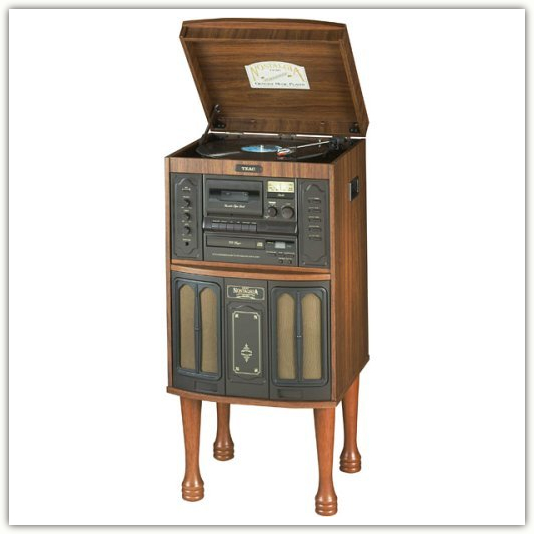
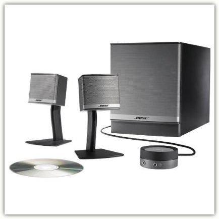

Friday, November 03rd, 2006 6:19pm
十月。
破天荒的整整一个月都没有写blog。这是第二学年的头一个月，手头的事情头绪繁杂。课程+TA+research，一一数起来也显得日子蛮充实的样子。对比去年此时心无旁骛，除了上课别无他事，自然不能同日而语。
可是——多少有点出乎自己预料的是——我并不觉得格外忙碌。手头的事情当然多少常常带来烦恼，可是有趣的部分也多了不少。每天坐校车来往于公寓和校园之间，日子前所未有的规律起来。自进入大学校园至今，这大概是我的生活最规律的一段时光了。
一点点觉得自己开始像个标准phd学生的样子。——其实多少还是不像，归咎于洛杉矶热闹的华人圈子，我从来没体会过传说中的留学生的异乡愁绪，但是一旦开始做研究，到底还是渐渐触摸到了phd学生心底所共有的那些若明若暗的伤感。日子愈是单调忙碌，那种眼看着光阴点滴流逝而无从把握的焦灼就愈是清晰。 MITBBS有云，所谓WSN者，烂人烂校烂专业，没钱没车没老婆。换作了彼人彼地彼时彼事，这样的日子实在很难让人不意志消沉。
所幸至少还有不同的道路……有喜欢的专业和投契的导师，有心爱的朋友和笑容，有未知的无限可能摆在前面，日子纵然单调，单调到一个月都写不出一篇blog，也到底还是让人舒心的吧。
（画外音：大工作日的下午，窗外空气新鲜清澈，阳光温柔，放着音乐写blog，至于把自己说得这么委屈么？）
正在听图翁涅拉的天鹅，这大概是心情不能开朗起来的主要原因吧……音响是新买的，Bose的Companion 3二代，掏钱的时候很是咬了咬牙。来洛杉矶一年多，听音乐的设备几经周折。头一年多用耳机，Sennheiser的HD580，声音好则好矣，戴久了终究会觉得耳部不适。音源则半是电脑半是CD，曾经还试着买过一台Teac的GF-480，带turntable的那种，摆在屋子一角，正好让自己的黑胶唱片派上用场。可是质量有点问题，没过多久又无奈的退掉。直到搬家之后有了闲暇，才终于又有工夫给自己挑台音箱了。挑的过程也颇费周折，这边电子商店里的好音箱几乎付之阙如，在网上购买没法试听又实在心里没底。一度被apple搭配的那款眩目的Harman Kardon Soundsticks II所诱惑，直到亲自听到才知道满不是那么回事。后来终于在Century city找到一家Bose的专卖店才算解决问题。
我常常忍不住yy自己日后家里的音响设备。其实心里并没有清晰的概念，到底自己希望要多好的设备，何况如果砸下银子试图一劳永逸，结果可料，多半并不如意。想想也许现在这样子倒是更好，此刻让自己心满意足的声音就是最好的声音。以前看到一篇关于音响煲声的文章，说到好器材不用特意去煲，只用它来正常听音乐就好，日久天长，声音自然能煲到火候。“再没有什么比看着自己的音响的声音一天天完美起来更幸福的事了。”
诚哉斯言。
Teac GF-480 Console

Sennheiser HD580
Harman Kardon Soundsticks II

Bose Companion 3 Series II
